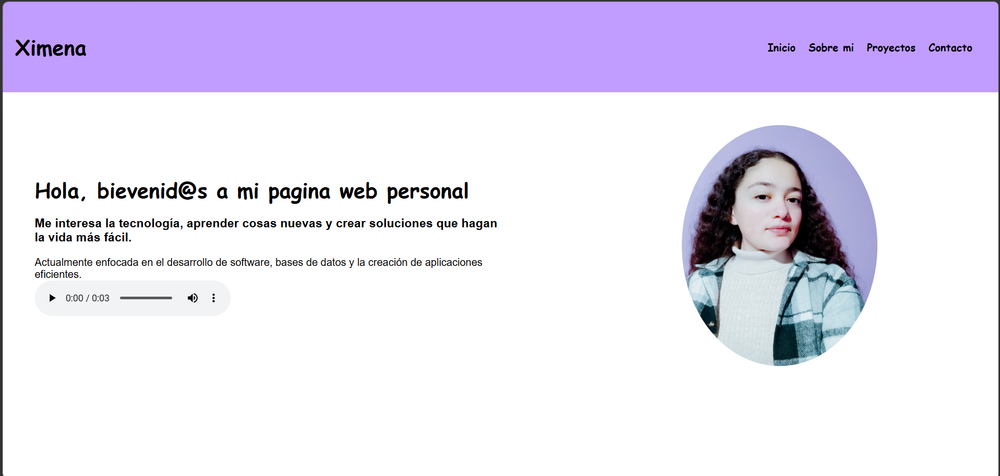

Ximena
Mis proyectos
Eco Rank
Aplicación móvil desarrollada como proyecto escolar, enfocada en el cuidado del medio ambiente.Es una aplicacion que nos ayuda con el tema de la basura en la escuela, fue enfocado en el area de CUPA a que se refiere, basicamente los estudaintes llevaban su basura como botellas y cosas asi,de las cuales se les iban generando puntos y al llegar a cierta cantidad de puntos podian canjear por una recompensa.
Proyecto realizado durante mi formación como estudiante de Desarrollo de Software Multiplataforma, en la materia de Proyecto Integrador.
Tecnologías: JavaScript, MySQL
Página web personal
Sitio web creado para presentar información sobre mí, mis intereses, habilidades y proyectos.
Tecnologías: HTML y CSS.
